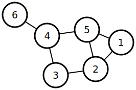
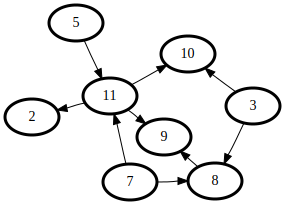
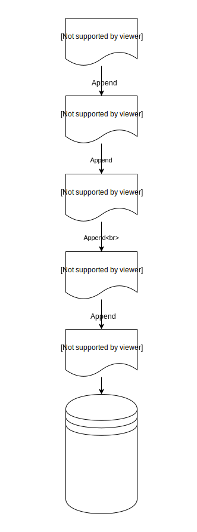

0. 恒信是什么？
恒信是一个网络数据服务提供商，向用户提供低成本、高效、的分布式不可篡改公开透明只写数据库解决方案。
1. 什么是只写数据库？
只写数据库（CAR Database）不像传统电子数据库那样提供四项基本操作：Create 创建、Read 读取、Update 更新、Delete 删除。只写数据库，只有两项操作，即，创建（Create）、写入（Append）、读取（Read）—— CAR。
使用这种只写数据库的场景之中，公开透明、不可篡改是最基本、最核心的需求。
数据一旦被写入即不可篡改。这种特性在只读数据库中是使用分布式节点管理完成的。整个网络将有不少于 7 个的节点构成，节点之间通过对有向无环图原理（DAG）与可信执行环境（TEE）这两项技术的组合使用完成节点之间的共识，确保数据库的一致性、透明性，以及不可篡改的特征。
2. 为什么我们需要只写数据库
历史上，第一个大规模使用类似“只写”场景的应用，也许是推特（Twitter）—— 虽然这个应用并未使用真正意义上的只写数据库，也并没有刻意规避“删除”这个操作，但它的确刻意地从用户操作中剔除了“更新”。换言之，在几乎所有的数据库应用都提供 CRUD 操作功能的时候，推特却只提供了 CRW 操作。有意无意之间，推特向世人展示了一种前所未有的数据库方案（Database Scheme）的应用场景。
数据，广义上来被定义为“事实之集合”（Summary of facts）。在可收集、可整理、可调取、可被研究的数据越来越多的时代，我们面临越来越多的场景，需要使用到不可篡改的、公开透明的数据库。
比如，现在试管婴儿越来越多，代孕渠道越来越广泛；于是，在不久的将来，将有大批的年轻人会因为缺乏足够数据支撑的出生证明而烦恼 —— 如果进使用当前版本的“出生证明”，那么他们很可能完全没办法知道该如何避免近亲婚姻。市场上出售精子和卵子的人是现在人群中的极少数，可这恰恰意味着说，在将来，很可能有相当数量的年轻人是这极少数人的血缘后代，很多分散在世界各地的年轻人，虽然互不相识，却有着直系血缘关系…… 他们必须想办法避免近亲婚姻。在这样的场景下，从今天就开始建立信息更为完善的，不可篡改的，基于只写数据库技术的完整记录是必要的。再比如说，学历证明、工商登记、车辆登记等等，理论上都需要这种不可篡改的只写数据库方案 —— 很明显，在这样的场景中使用这样的数据库方案，能够极大程度地降低社会成本，提高社会效率。
3. 只写数据库的工作原理
3.1 可信执行环境（TEE）
可信执行环境（TEE）是运行在设备中的，与设备所使用的 OS 并行的一个代码执行环境。可信执行环境的应用之一，就是可以向在线远程终端证明正在执行的代码就是当前可信执行环境声称所执行的代码。换言之，可以把可信执行环境当作一个“透明箱”（相对于“暗箱”）来使用；如此这般，黑客即便是攻入了可信执行环境，也只能进行公开地操作和修改，无法施展“人不知鬼不觉的操作”。
将可信执行环境引入只写数据库方案的结果是运维成本被最大程度降低。
比特币的区块链所采用的 PoW 共识机制被证明为是有效的实现“不可篡改”的手段之一，但缺点是成本高昂（每条记录都需要支付一定的比特币费用，效率相对低下（大约每十分钟才能进行一次写入操作）。
使用可信执行环境技术 —— 在“透明箱”里运行开源代码 —— 这使得“共识机制”不再必要：
- 起始所需要的 7 个节点，成本起始很低；单个节点运行成本也非常低；
- 随后加入的节点必须在“透明箱”里运行相同的代码才被承认；
- 加入的节点越多，网络越高效越安全……
3.2 有向无环图（DAG）
在图论（Graph Theory）中，如果一个有向图从任意顶点出发，无法经过若干条边回到该点，则，这个图是有向无环图。
以下是一个由 6 个顶点和 7 条边组成的图：

以下是一个有向无环图的例子：

换言之，在有向无环图（Directed Acyclic Graph）这种分布式的体系结构（而不是链式结构）中，可以保证从一个顶点沿着若干边前进（有向），却永远不可能回到原点（无环）。
使用这种分布式体系结构替代链状结构的优势在于两方面，来自于它可被异步处理的属性：
- 理论上可以承载无限多的并发（TPS 不再处于考虑范围之内）
- 不再存在矿工的角色，没有算力攻击风险
3.3 数据库操作
只写数据库并不强求数据库中的每条记录都必须使用同样的结构（即，CAR Database 中并无传统的“字段”概念）。创建一个只读数据库之后，它就是由不断写入（Append）的一切记录构成。

如果不慎写入的数据是错误的，必须更改，那么只需再一次写入（Append）一个 ID 相同的记录即可，进而各个节点要达成共识，授权写入这一条 ID 重复的记录 —— 由于时间戳（Timestamp）的存在，索引可以将时间顺序排在最后的相同 ID 记录视为“唯一正确”的记录。如此这般，在完成数据更新的同时，也存下了这条记录的历史 —— 这个属性在一些需要追责的应用场景下不可或缺。
与此同时，可为只读数据库创建一个单独的检索服务器，这个服务所使用的数据库可以是传统的 CRUD 数据库方案，以便大大提高检索效率。